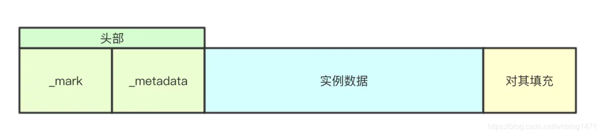

Ch03-Java 之 Java 对象结构
August 10, 2017
在 HotSpot 虚拟机中，对象在内存中存储的布局可以分为三块区域：对象头 (Header)、 实例数据 (Instance Data)、对齐填充 (Padding)。
1. 内存布局 #

| 内存布局 | 说明 |
|---|---|
| 对象头 | HotSpot 虚拟机的对象头包括两部分信息，Mark Word（标记字段）和 Klass Pointer（类型指针） |
| 实例数据 | 即对象真正存储的有效信息，也是程序代码中所定义的各种类型的字段内容。无论是从父类继承下来的，还是子类中定义的，都需要记录起来。 |
| 对齐填充 | 对齐填充并不是必然存在的，也没有特别的含义，它仅仅起着占位符的作用。会将对象补充为 8 的倍数。 |
2. 对象头 #
在 JVM 中，Hotspot 并没有将 Java 对象映射成 C++对象，而是实现了 Java 的对象模型（OOP-Klass）。JVM 不希望每个对象中都包含一份虚函数表，所以就把对象模型拆成 klass 和 oop，其中 oop 中不含有任何虚函数，而 klass 就含有虚函数表，可以进行 method dispatch。
- OOP 英文全称是 Ordinary Object Pointer，即普通对象指针，看起来像个指针实际上是藏在指针里的对象，表示对象的实例信息。
- Klass 元数据和方法信息，用来描述 Java。是 Java 类的在 C++中的表示形式，用来描述 Java 类的信息。
当加载一个 Class 时，会创建一个 InstanceKlass 对象，实例化的对象则对应 instanceOopDesc，它继承自 oopDesc，用于表示普通的 Java 对象，每次 new 一个 Java 对象就会创建一个新的 instanceOopDesc 实例，其中 InstanceKlass instanceOopDesc 存放在堆中。
class oopDesc {
private:
volatile markWord _mark;
union _metadata {
Klass* _klass;
narrowKlass _compressed_klass;
} _metadata;
}
class instanceOopDesc : public oopDesc {
public:
static int header_size() { return sizeof(instanceOopDesc)/HeapWordSize; }
}
2.1 markWord #
| 字节分配 | 说明 |
|---|---|
| 无锁 | 对象头开辟 25bit 的空间用来存储对象的 hashcode，4bit 用于存放对象分代年龄，1bit 用来存放是否偏向锁的标识位，2bit 用来存放锁标识位为 0，其标识为 01 |
| 偏向锁 | 开辟 25bit 的空间，其中 23bit 用来存放线程 ID，2bit 用来存放 Epoch，4bit 存放对象分代年龄，1bit 存放是否偏向锁标识，0 表示无锁，1 表示偏向锁，锁的标识为 01 |
| 轻量级锁 | 开辟 30bit 的空间存放指向栈中锁记录的指针，2bit 存放锁的标志位，其标识为 00 |
| 重量级锁 | 开辟 30bit 的空间用来存放指向重量级锁的指针，2bit 存放锁的标识位，其标识为 11 |
| GC 标记 | 开辟 30bit 的内存空间却没有占用，2bit 空间存放锁标识为 11 |
2.2 _metadata #
多个对象的 ModelA 和 ModelB 的定义如下
class Model {
public static int a = 1;
public int b;
public Model(int b) {
this.b = b;
}
public static void main(String[] args) {
int c = 10;
Model modelA = new Model(2);
Model modelB = new Model(3);
}
}
3. 对象的访问定位 #
3.1 使用句柄访问 #
如果使用句柄访问方式，Java 堆中将会划分出一块内存来作为句柄池，reference 中存储的就是对象的句柄地址，而句柄中包含了对象实例数据和类型数据各自的具体地址信息。
3.2 使用直接指针访问 #
如果使用直接指针访问方式，java 堆对象的布局中就必须考虑如何放置访问类型数据的相关信息，reference 中直接存储的就是对象地址。